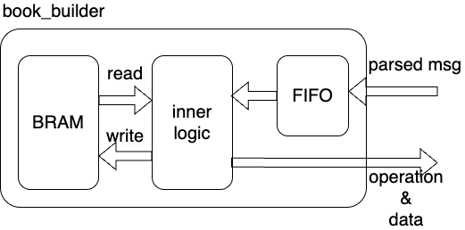

book_builder
This module is the per-symbol order-table stage inside symbol_book. It accepts parser events from order_book_parser, stores the current state of each live order, and emits compact quantity-delta messages for the bid-side and ask-side quantity books at the same time.
Structure
Below gives the inside schematic of book builder:

Design Logic
- fifo is necessary, as the operation cannot be done in one cycle.
- It maintains an order_book_inst inside, which is a bram saving the live order books. It is a database for the building of the price level books.
- When the incoming messages are being parsed, the state machine also translates the operations to qty_builder inside qty_book_wrapper to update the best bid/ask.
Interface
Inputs
i_clk_156is the main clock for the FIFO, state machine, and BRAM access.i_rstclears the order table control state and the current quantity-delta output registers.i_stock_validgates events so only the configured symbol enters thisbook_builder.i_parser_msgis the packed parser payload. In this design it carries{msg_valid, seq_num, msg_type, stock_locate, order_ref_num, new_order_ref_num, side, shares, price}.
Outputs
o_qty_msgis a131-bitpacked quantity update{bid_ask[1:0], price[31:0], is_add, d_shares[31:0], seq_num[63:0]}.
Order Table
Each table entry stores:
valid: whether the slot currently holds an orderside:BID(2'b01) orASK(2'b10)shares: current resting shares for that orderprice: current resting price
The address is not the raw order_ref_num. Instead, cal_order_book_addr() XOR-folds the 64-bit order reference into BOOK_LEVEL_BIT bits:
for (i = 0; i < BOOK_LEVEL_BIT; i = i + 1) begin
for (j = 0; j < 64; j = j + BOOK_LEVEL_BIT) begin
if (i + j < 64) begin
cal_order_book_addr[i] = cal_order_book_addr[i] ^ order_ref_num[i+j];
end
end
end
This keeps the table compact, but it also means different order references can collide and map to the same BRAM slot.
The function can be modified if the entropy of the higher bits is low.
State Machine
The update path uses four states because the BRAM has synchronous read latency.
IDLE: handleA/Fimmediately with one write, or start a read forD/X/E/C/U.FIRST_CYCLE: keep the read request active while waiting for the stored order to appear onbook_o_data.SECOND_CYCLE: consume the stored order and perform delete, reduce, or the first phase of replace.THIRD_CYCLE: finish the second write of aUreplace event.
In practice, add-order messages finish in one cycle, delete/reduce messages take three cycles, and replace messages take four cycles because they perform a remove followed by an add.
Message Handling
Add path
TYPE_AandTYPE_Fwrite{1'b1, msg_side, msg_shares, msg_price}into the order table atcal_order_book_addr(msg_order_ref_num).- The same cycle,
o_qty_msgreports an add event withqty_is_add = 1'b1.
Remove or reduce path
TYPE_Dreads the old order, clears the BRAM entry, and emits a remove event for the full resting shares.TYPE_X,TYPE_E, andTYPE_Cread the old order, subtractmsg_shares, rewrite the order entry, and emit a remove event formsg_shares.- If the order is missing, or if
book_o_shares < msg_shares, the module falls back to an idle output update.
Replace path
TYPE_Ufirst reads and removes the old order referenced bymsg_order_ref_num.- One cycle later it writes a new entry under
msg_new_order_ref. - The new entry reuses the old side from
book_o_side, together with the new shares and new price from the parser message. - As a result, one
Umessage generates two quantity updates on consecutive cycles: one remove, then one add.
Quantity Output
The quantity stream is the only public output of this block, and it is exactly what the downstream quantity books need:
qty_bid_askselects bid or ask.qty_priceselects the price level to update.qty_is_adddistinguishes add from remove.qty_d_sharesis the delta applied at that level.qty_seq_numcarries the parser sequence number so downstream best-price snapshots can keep event ordering.
When no valid update is being emitted, qty_bid_ask falls back to IDLE (2'b00).
Design Limits
msg_fifo_inst.o_push_readyis not checked, so parser events can be dropped if the internal FIFO becomes full.cal_order_book_addr()is a hash, not a collision-free order-reference mapping.- The default parameter
PARSER_MSG_BIT = 1+64+8+16+64+64+2+32+32+48still includes an extra+48, but the implemented field slices only use bits up toi_parser_msg[282].